00이 매뉴얼에 대하여
급탕량·보일러 출력 산정 시스템은 건물 용도 · 사용인원 · 온도 조건을 넣으면 1일 최대 급탕량 · 시간 최대 급탕량 · 보일러 필요 출력을 산정하고 A4 산정서를 만듭니다. 온도 · 배관 기준은 기계설비 기술기준 국토교통부 고시 제2021-851호(제2026-360호로 타법개정, 2026. 7. 8. 시행) 별표 5와 KDS 31 30 20:2021 급탕설비를 따르고, 기준에 수치가 없는 용도별 원단위 · 시간최대계수 · 보일러 산정식은 MANMIN 참고값으로 표시합니다.
| 항목 | 내용 |
|---|---|
| 대상 프로그램 | 급탕량·보일러 출력 산정 시스템 MANMIN Ver-5.0(v5.0.2) — 탭 막대 「📘 매뉴얼」 버튼으로 이 문서가 열립니다 |
| 접속 주소 | manminkim-eng.github.io/Hot-Water-Supply-System |
| 매뉴얼 판 | Ver-5.0 (화면 표기와 같은 판 번호, 초판) · 2026-10-13 · 작성 김만민 건축사(㈜대성건축사사무소) |
| 내려받기 | PDF(A4) · 급탕량·보일러 출력 산정 시스템 열기 |
| 예제 | 본문 그림은 예제 A(공동주택 · 거주자 300명 · 16 h · 60 / 10 / 42℃ · 효율 90 % · 여유율 20 %)로 캡처했습니다. 결과 1일 36,000 L · 시간 최대 3,375 L/h · 보일러 261.6 kW. 예제 B(사무소 100명 → 21.8 kW)는 5-3 |
| 근거 기준 | 기계설비 기술기준 국토교통부 고시 제2021-851호(제2026-360호로 타법개정, 2026. 7. 8. 시행) 별표 5 2.2 / KDS 31 30 20:2021 급탕설비 1.6 · 4.1 — 국토교통부고시 제2026-92호(2026. 3. 1. 시행, 현행) 첨부 원문과 대조(2026-10-13) |
| 읽는 순서 | 처음이면 1장 → 2장(따라하기) → 필요할 때 3장(화면별 상세). 장비 선정 전에는 4장(기술기준) · 5장(작업 방법) |
01한눈에 보기
설치 없이 브라우저에서 바로 실행되는 단일 페이지 앱(PWA)입니다. 입력한 내용은 내 PC 브라우저 안에서만 계산되며 서버로 전송되지 않습니다.
무엇을 산정하나
1일 · 시간 · 분 최대 급탕량과 보일러(급탕 가열장치) 필요 출력
용도
호텔 · 병원 · 사무소 · 공동주택 · 학교 · 음식점 · 공장 · 체육 · 미용 · 유치원 · 기숙사 · 직접 입력
근거
기계설비 기술기준 별표 5 · KDS 31 30 20:2021 급탕설비 · 원단위는 MANMIN 참고값
1-1. 화면 구성
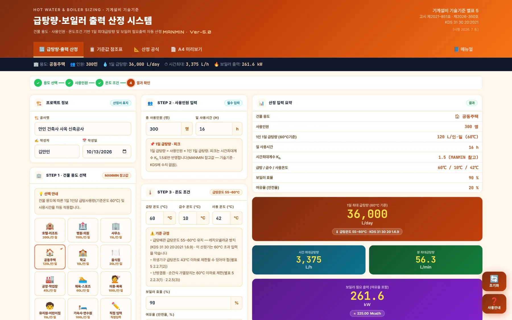
123456789- 1작업 탭: 급탕량 · 출력 산정 · 기준값 참조표 · 산정 공식 · A4 미리보기 · 매뉴얼
- 2요약 스트립: 용도 · 인원 · 1일 급탕량 · 시간 최대 · 보일러 출력
- 3진행 단계: 용도 선택 → 사용인원 → 온도 조건 → 결과 확인
- 4프로젝트 정보
- 5STEP 1 건물 용도 선택
- 6STEP 2 사용인원 입력
- 7STEP 3 온도 조건
- 8산정 결과 — 입력 요약 · 급탕량 · 보일러 출력
- 9오른쪽 아래 「초기화」 · 「사용 안내」
| 영역 | 내용 |
|---|---|
| 왼쪽 — 공사 · 용도 | 프로젝트 정보 → STEP 1 용도 버튼(1인 1일 급탕량 표시) |
| 가운데 — 입력 | STEP 2 사용인원 · 일 사용시간 → STEP 3 급탕 · 급수 · 사용 온도 · 보일러 효율 · 여유율 → 「⚡ 급탕량 · 보일러 출력 자동 산정」 |
| 오른쪽 — 결과 | 입력 요약 → 1일 최대 급탕량(큰 숫자) → 시간 · 분 최대 → 보일러 필요 출력 → 상세 결과표 → 적용 산정식 |
1-2. 작업 탭·근거 표시
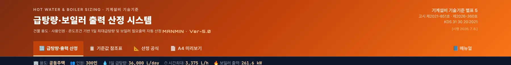
123456- 1급탕량 · 출력 산정
- 2기준값 참조표 — 용도별 원단위(MANMIN 참고값)
- 3산정 공식 — 계산식 · 설계 주요 규정
- 4A4 미리보기 — 산정서 · 인쇄 · JPG
- 5매뉴얼(이 문서)
- 6근거: 기술기준 별표 5 · 고시 제2021-851호 · 제2026-360호 · KDS 31 30 20:2021
1-3. 설치·보관·매뉴얼
| 항목 | 내용 |
|---|---|
| 설치 | 주소창의 설치 아이콘 또는 휴대전화 「홈 화면에 추가」로 앱처럼 쓸 수 있습니다. 한 번 연 뒤에는 인터넷 없이도 계산됩니다 |
| 결과 보관 | 문서로 남기려면 A4 산정서(PDF · JPG)를 쓰십시오. 공사명 · 작성자는 초기화해도 남습니다 |
| 매뉴얼 | 탭 막대 오른쪽 끝 「📘 매뉴얼」 — 인터넷 연결 시 새 창으로 열립니다. 좁은 화면에서는 탭 막대를 좌우로 밀면 보입니다 |
| 업데이트 | 새 버전이 올라오면 다음 접속 때 자동으로 바뀝니다. 화면이 예전 그대로면 새로 고침(Ctrl+F5) |
021분 따라하기
예제 A로 6단계를 따라 하면 공동주택 거주자 300명의 보일러 필요 출력 261.6 kW가 나옵니다.
- ① 용도 선택프로젝트 정보에 공사명 · 작성자 · 작성일을 넣고, STEP 1에서 「🏠 공동주택」을 누릅니다. 1인 1일 급탕량 120 L(60℃, MANMIN 참고값)과 일 사용시간 16 h가 채워집니다(3-2).
- ② 사용인원STEP 2에 총 사용인원 300을 넣습니다(3-3).
- ③ 온도 조건STEP 3에서 급탕 60℃ · 급수 10℃ · 사용 42℃, 보일러 효율 90 %, 여유율 20 %를 확인하고 「⚡ 급탕량 · 보일러 출력 자동 산정」을 누릅니다(3-4).
- ④ 산정 결과1일 36,000 L → 시간 최대 3,375 L/h → 보일러 필요 출력 261.6 kW(3-5).
- ⑤ 산정식 확인상세 결과표와 「적용 산정식」 상자에서 계산 과정을 숫자로 확인합니다(3-6).
- ⑥ A4 산정서「📄 A4 미리보기」에서 「🖨️ 인쇄 / PDF」 또는 「🖼️ JPG 저장」으로 산정서를 남깁니다(3-10).
| 항목 | 예제 A 결과 |
|---|---|
| 1일 최대 급탕량(60℃) | 300명 × 120 L/인·일 = 36,000 L/day |
| 시간 최대 급탕량 | 36,000 × Kh 1.5 ÷ 16 h = 3,375 L/h (56.25 L/min) |
| 보일러 열량 | 3,375 × (60 − 10) ÷ 0.9 = 187,500 kcal/h = 218.02 kW |
| 보일러 필요 출력 | 218.02 × (1 + 20 %) = 261.6 kW (225 Mcal/h) |
| 사용온도(42℃) 환산 1일량 | × (60 − 10) ÷ (42 − 10) = 1.5625 → 56,250 L/day(참고) |
03화면별 기능 상세
3-1. 프로젝트 정보
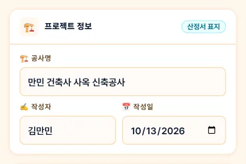
123- 1공사명
- 2작성자
- 3작성일
3-2. 건물 용도 선택 (STEP 1)
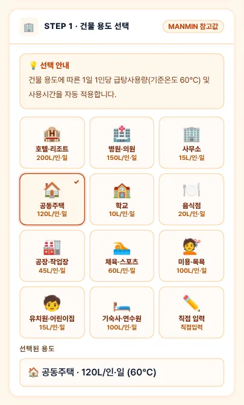
123- 1용도 12종(직접 입력 포함)
- 2선택한 용도
- 3선택 용도 · 1인 1일 급탕량
| 항목 | 내용 |
|---|---|
| 용도 버튼 | 버튼마다 1인 1일 급탕량(60℃, L/인·일)이 적혀 있습니다. 누르면 STEP 2의 일 사용시간이 용도 표준값으로 채워집니다 |
| 원단위의 근거 | 기술기준 별표 5 · KDS 31 30 20:2021에는 용도별 급탕량 수치가 없습니다 — MANMIN 참고값(4-4) |
| 직접 입력 | 「✏️ 직접 입력」을 누르면 1인 1일 급탕량 입력란이 나타납니다(60℃ 기준) |
3-3. 사용인원 (STEP 2)
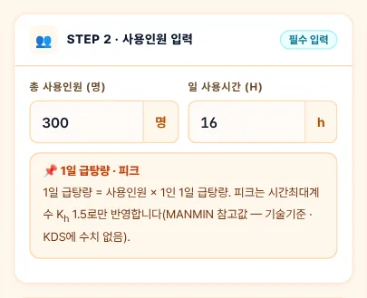
123- 1총 사용인원
- 2일 사용시간(용도별 자동, 수정 가능)
- 31일 급탕량 · 피크 안내
1일 급탕량 = 사용인원 × 1인 1일 급탕량입니다. 피크는 시간최대계수 Kh 1.5로만 반영하며, 동시사용률은 곱하지 않습니다.
3-4. 온도 조건 (STEP 3)
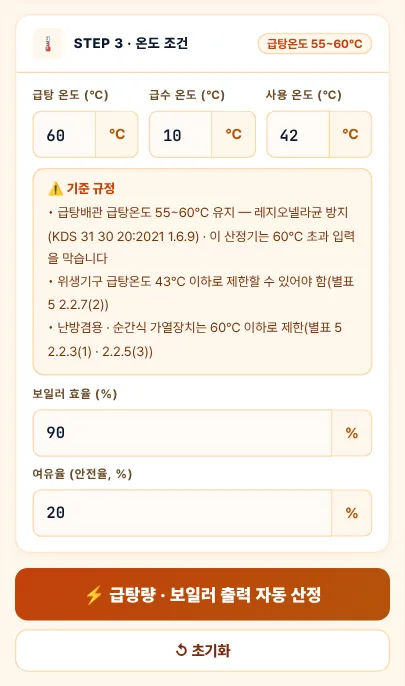
12345678- 1급탕 온도(60℃ 초과 입력 불가)
- 2급수 온도
- 3사용 온도
- 4기준 규정 — 55~60℃ · 43℃ · 60℃ 제한
- 5보일러 효율
- 6여유율
- 7⚡ 자동 산정
- 8초기화
| 항목 | 내용 |
|---|---|
| 급탕 온도 | 급탕배관 급탕온도는 55~60℃로 유지할 수 있게 합니다(KDS 31 30 20 1.6.9 — 레지오넬라균 방지). 60℃를 넘기면 산정하지 않고 안내합니다 |
| 사용 온도 | 위생기구 급탕온도는 43℃ 이하로 제한할 수 있어야 합니다(별표 5 2.2.7(2)). 이 값은 사용온도 환산 참고값에만 쓰입니다 |
| 급수 온도 | 0℃를 넣으면 0℃로 계산합니다(v5.0.1부터 빈칸만 기본값 10℃) |
| 효율 · 여유율 | 효율로 열량을 나누고 여유율을 곱해 필요 출력을 구합니다. 여유율 0 %도 그대로 계산합니다 |
3-5. 산정 결과
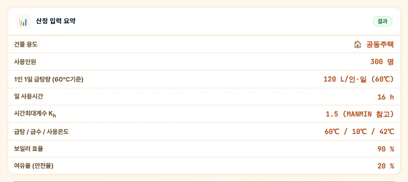
1234- 1건물 용도
- 21인 1일 급탕량
- 3시간최대계수 K_h(MANMIN 참고)
- 4급탕 / 급수 / 사용온도
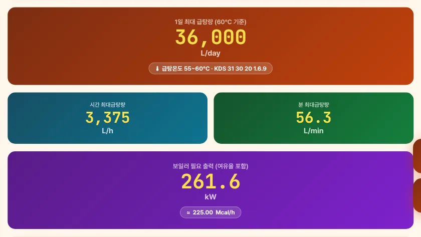
1234- 11일 최대 급탕량
- 2시간 최대 급탕량
- 3분 최대 급탕량
- 4보일러 필요 출력(여유율 포함)
3-6. 상세 결과·산정식
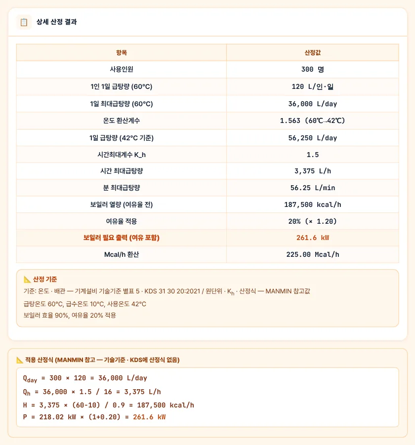
123- 1상세 산정 결과
- 2산정 기준 — 온도 · 배관 / MANMIN 참고값 구분
- 3적용 산정식 — 숫자를 넣은 식
3-7. 기준값 참조표 탭
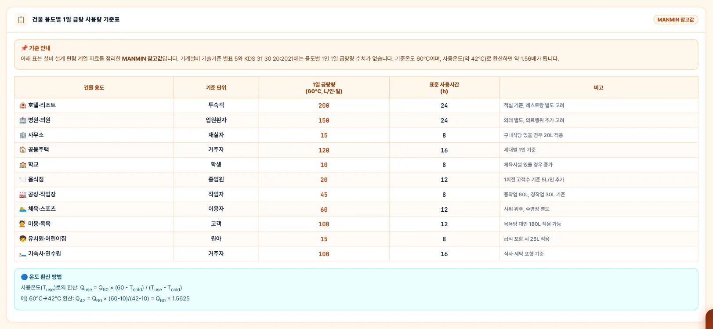
123- 1MANMIN 참고값 안내
- 2용도 · 단위 · 급탕량 · 사용시간 · 비고
- 3온도 환산
3-8. 산정 공식 탭
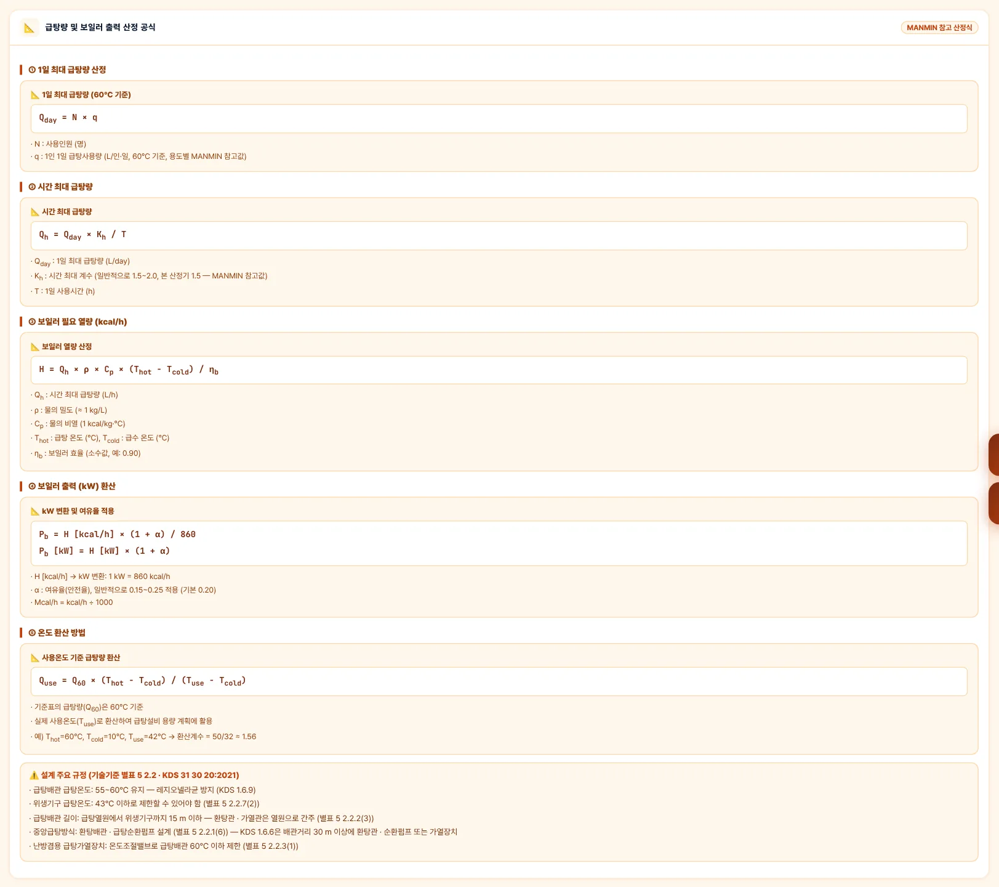
3-9. 사용 안내 창
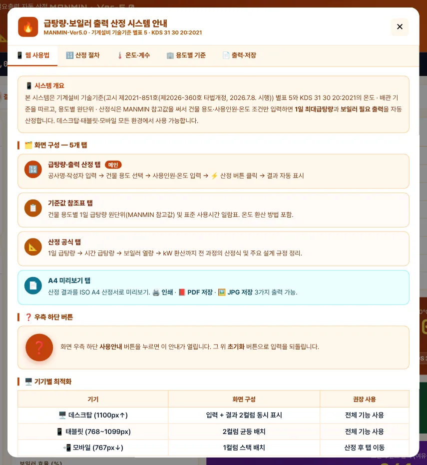
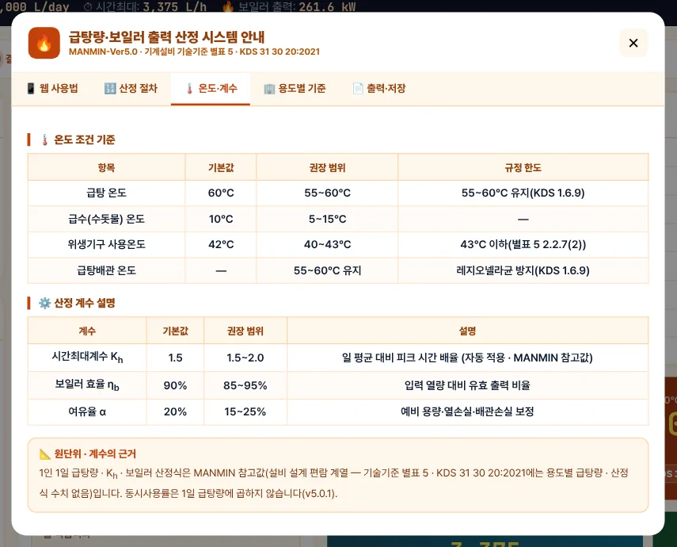
3-10. A4 미리보기·출력
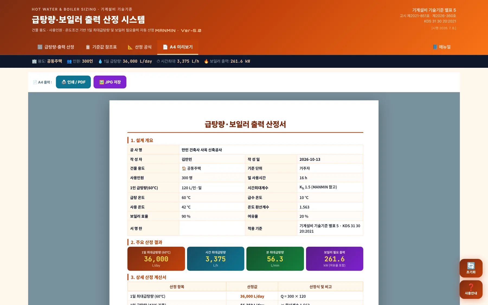
123- 1인쇄 / PDF
- 2JPG 저장
- 3A4 산정서
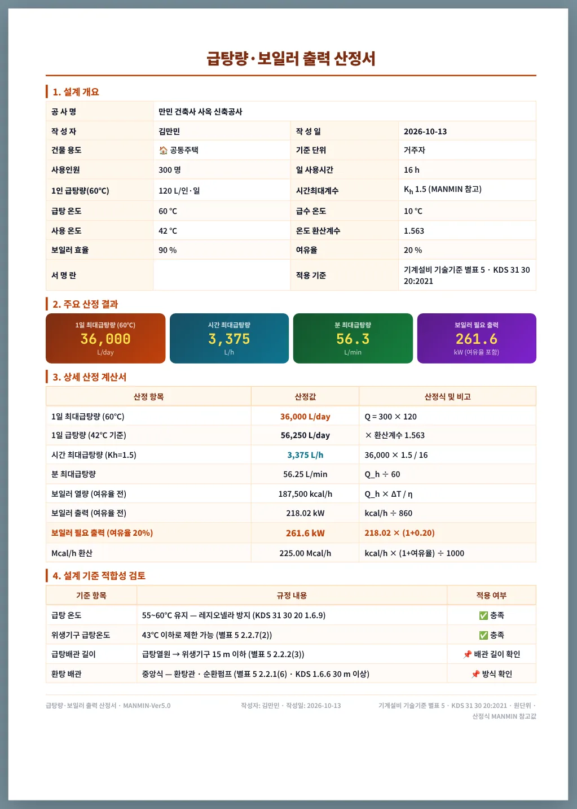
1234- 11. 설계 개요
- 22. 주요 산정 결과
- 33. 상세 산정 계산서
- 44. 설계 기준 적합성 검토
「4. 설계 기준 적합성 검토」는 급탕 온도 55~60℃(KDS 1.6.9) · 사용온도 43℃ 이하(별표 5 2.2.7(2))를 자동 판정하고, 배관 길이 15 m · 환탕 방식은 「확인」으로 표시합니다.
3-11. 휴대전화 화면
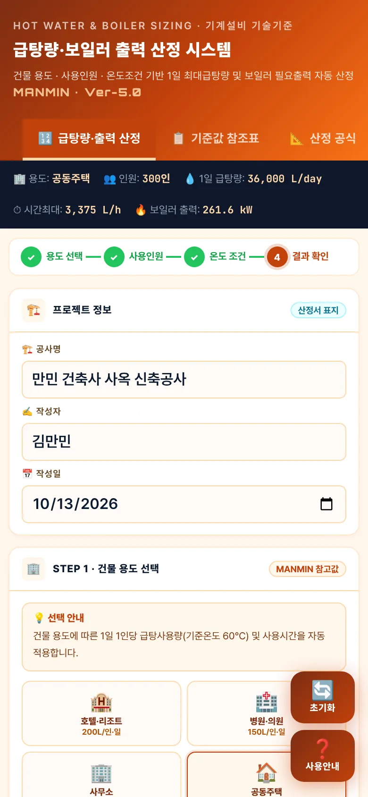
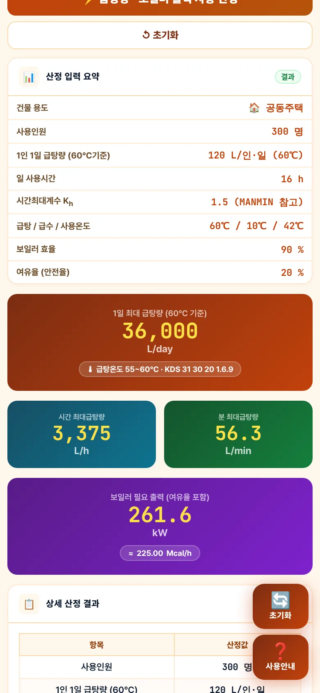
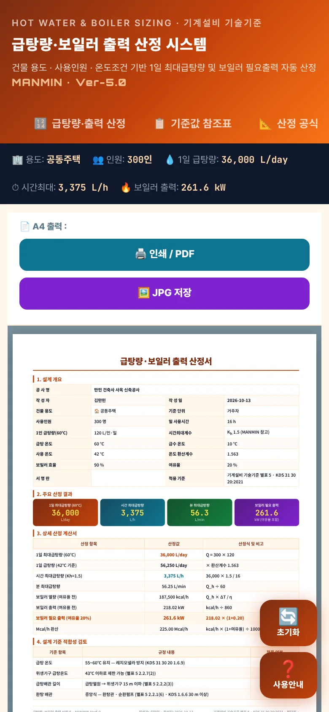
좁은 화면에서는 프로젝트 → 용도 → 입력 → 결과가 한 줄로 쌓입니다. 탭 막대는 다른 MANMIN 도구와 같이 한 줄이며 좌우로 밀어 「매뉴얼」까지 볼 수 있습니다.
04기술기준 해설
4-1. 근거 체계
| 근거 | 내용 |
|---|---|
| KDS 31 30 20 1.6.9 | 급탕배관 내 급탕온도는 레지오넬라균 서식을 방지하기 위해 55~60℃로 유지할 수 있게 함 |
| 별표 5 2.2.7(2) · KDS 4.6.2 | 온도제한장치나 혼합장치로 위생기구 급탕온도를 43℃ 이하로 제한할 수 있어야 함 |
| 별표 5 2.2.3(1) · 2.2.5(3) | 난방겸용 급탕가열장치는 온도조절밸브로 급탕배관 60℃ 이하 제한 · 순간 급탕가열장치는 60℃ 이하로 설정할 수 있어야 함 |
| 별표 5 2.2.2(3) · KDS 4.1.4 | 급탕열원에서 급탕 위생기구까지 배관길이 15 m 이하 — 환탕배관과 가열관은 급탕열원으로 간주 |
| 별표 5 2.2.1(6) · KDS 1.6.6 | 중앙급탕방식은 환탕배관 · 급탕순환펌프 설계 — KDS는 배관거리 30 m 이상에 환탕관 · 순환펌프 또는 급탕관 가열장치 |
| MANMIN 참고값 | 1인 1일 급탕량 · 일 사용시간 · Kh · 보일러 산정식 — 기준에 수치 없음 |
기계설비 기술기준 국토교통부 고시 제2021-851호(제2026-360호로 타법개정, 2026. 7. 8. 시행) · KDS 31 30 20:2021 급탕설비(2021.2.19. 개정) — 국토교통부고시 제2026-92호(2026. 3. 1. 시행, 현행) 첨부 전문
4-2. 급탕 온도
급탕배관은 55~60℃로 유지하고(레지오넬라 방지), 위생기구에서는 혼합장치 등으로 43℃ 이하로 낮춥니다. 위생기구 최대 온도를 급탕가열장치의 온도조절기로 제한해서는 안 됩니다(별표 5 2.2.7(1)). 예전 판의 「60℃ 이하 — 기술기준 2.2.7」 · 「저장온도 60℃ 이상」 문구는 원문과 달라 v5.0.1에서 고쳤습니다.
4-3. 급탕배관 길이·환탕
15 m는 급탕열원에서 위생기구까지의 최대 배관길이입니다. 이를 넘는 계통은 환탕관 · 가열관을 설치해 그 지점을 열원으로 간주할 수 있게 합니다. 환탕 유량은 배관 열손실로 구합니다(KDS 4.1.2 — Q = q ÷ (ρ · Cp · Δt), 허용 온도차 공동주택 5 K 이하 · 그 외 5~10 K, 열손실은 배관 길이 × 30 W/m로 계산할 수도 있음). 이 앱은 환탕 유량은 계산하지 않습니다.
4-4. 1일 급탕량 원단위 (MANMIN 참고값)
| 용도 | 단위 | L/인·일(60℃) | 사용시간 h |
|---|---|---|---|
| 호텔·리조트 | 투숙객 | 200 | 24 |
| 병원·의원 | 입원환자 | 150 | 24 |
| 사무소 | 재실자 | 15 | 8 |
| 공동주택 | 거주자 | 120 | 16 |
| 학교 | 학생 | 10 | 8 |
| 음식점 | 종업원 | 20 | 12 |
| 공장·작업장 | 작업자 | 45 | 8 |
| 체육·스포츠 | 이용자 | 60 | 12 |
| 미용·목욕 | 고객 | 100 | 12 |
| 유치원·어린이집 | 원아 | 15 | 8 |
| 기숙사·연수원 | 거주자 | 100 | 16 |
4-5. 시간 최대 급탕량
4-6. 보일러 출력
시간 최대 급탕량을 그대로 가열할 수 있는 용량(저탕 없는 순간식에 가까운 계산)입니다. 저탕조를 두면 가열능력을 줄일 수 있으나, 저탕 용량과 가열능력의 조합은 이 앱이 계산하지 않습니다.
4-7. 사용온도 환산
4-8. 계산 범위·한계
| 항목 | 내용 |
|---|---|
| 계산하는 것 | 1일 · 시간 · 분 최대 급탕량, 보일러 열량 · 필요 출력, 사용온도 환산량 |
| 계산하지 않는 것 | 저탕조 용량 · 저탕 가열 조합, 급탕관 지름(급탕부하단위 FU — 별표 8 2.5), 환탕 유량 · 순환펌프 양정(KDS 4.1.2 · 4.5), 팽창탱크, 배관 열손실 |
| 원단위 | 용도별 대표값 1개 — 실제 사용 패턴과 다를 수 있음 |
4-9. v5.0.1 근거·계산 정정 (2026-10-13)
| 항목 | 기존 | 정정 |
|---|---|---|
| 원단위 출처 | 「KDS 31 30 20 · 기술기준 별표5」 | MANMIN 참고값 — 기준에 수치 없음 |
| 60℃ 상한 | 「기술기준 2.2.7」 | KDS 1.6.9(55~60℃) · 별표 5 2.2.3(1) · 2.2.5(3) / 43℃는 2.2.7(2) |
| 레지오넬라 | 「저장온도 60℃ 이상」(같은 화면의 「60℃ 이하」와 상충) | 급탕배관 55~60℃ 유지 |
| 15 m | 「환탕 배관 15m 기준」 · 「15m 초과 시 환탕 의무」 | 급탕열원 → 위생기구 15 m 이하 · 환탕은 2.2.1(6) · KDS 1.6.6(30 m) |
| 동시사용률 | 1일 급탕량 × 70 % | 삭제 — Qday = N × q(결과 약 1.43배) |
| 0 입력 | 여유율 · 급수온도 0 → 20 % · 10℃로 바뀜 | 0 그대로 계산 |
| 근거 표기 | 고시 제2021-851호 · KDS 31 30 20 | 제2026-360호 타법개정(2026.7.8.) · KDS 31 30 20:2021 |
예전 판으로 뽑은 산정서는 보일러 출력이 약 30 % 작게 나왔습니다. 다시 산정하십시오.
05실무 작업 방법
5-1. 단계별 절차
| 단계 | 내용 |
|---|---|
| ① 방식 정하기 | 중앙식(저탕 · 순환) / 개별 순간식을 정하고, 계통을 용도 · 존별로 나눕니다 |
| ② 인원 · 원단위 | 계통별 사용인원과 1인 1일 급탕량을 정합니다. 시설 특성이 다르면 「직접 입력」 |
| ③ 산정 | 온도 · 효율 · 여유율을 넣고 1일 · 시간 최대 급탕량과 필요 출력을 구합니다 |
| ④ 장비 · 배관 | 필요 출력 이상의 표준 장비를 고르고, 급탕관 지름(FU) · 환탕 유량 · 순환펌프는 별도 산정 |
| ⑤ 출력 | 계통별 A4 산정서를 PDF로 남겨 설계도서에 붙입니다 |
5-2. 도면 반영 전 확인
| 항목 | 확인 |
|---|---|
| 온도 | 급탕배관 55~60℃ 유지 · 위생기구 43℃ 이하 혼합장치(별표 5 2.2.7) |
| 배관 길이 | 급탕열원 → 위생기구 15 m 이하, 넘으면 환탕 · 가열관(별표 5 2.2.2(3)) |
| 환탕 | 중앙식 환탕관 · 순환펌프 · 밸런싱 밸브(KDS 4.1.6) |
| 안전장치 | 팽창탱크 · 압력 · 온도 릴리프밸브 배출관 · 진공 릴리프밸브(별표 5 2.2.3 · 2.2.5) |
| 재질 | 급탕탱크 STS 316L 이상(별표 5 2.2.4(3)) |
5-3. 예제 B — 사무소
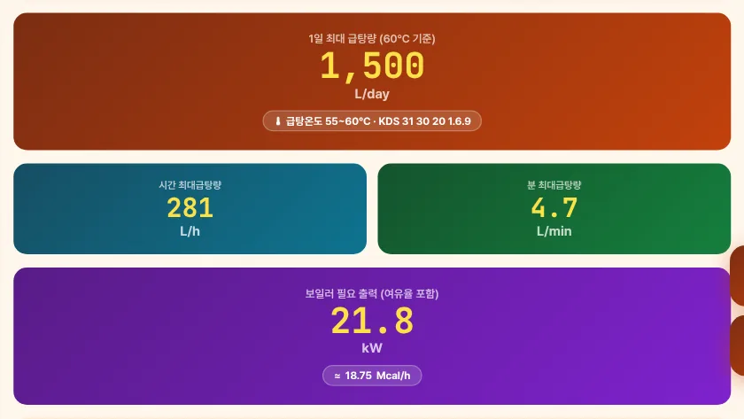
12- 11일 1,500 L
- 2보일러 21.8 kW
| 항목 | 예제 B 결과 |
|---|---|
| 1일 최대 급탕량(60℃) | 100명 × 15 L/인·일 = 1,500 L/day |
| 시간 최대 급탕량 | 1,500 × Kh 1.5 ÷ 8 h = 281 L/h (4.69 L/min) |
| 보일러 열량 | 281 × (60 − 10) ÷ 0.9 = 15,625 kcal/h = 18.17 kW |
| 보일러 필요 출력 | 18.17 × (1 + 20 %) = 21.8 kW (18.75 Mcal/h) |
| 사용온도(42℃) 환산 1일량 | × (60 − 10) ÷ (42 − 10) = 1.5625 → 2,344 L/day(참고) |
사무소는 원단위(15 L/인·일)가 작고 사용시간(8 h)이 짧아, 시간 최대 281 L/h 정도입니다. 탕비실 · 샤워실 위주라면 개별 순간식 가열장치(60℃ 이하 설정 — 별표 5 2.2.5(3))도 검토합니다.
06문제 해결·FAQ
| 증상 | 해결 |
|---|---|
| 「건물 용도를 먼저 선택하세요」 | STEP 1에서 용도 버튼을 누른 뒤 산정하십시오 |
| 「급탕온도는 60℃ 이하로 설정하세요」 | 급탕 온도를 60℃ 이하로 넣으십시오(KDS 31 30 20 1.6.9 · 55~60℃ 유지) |
| 「사용온도는 급탕온도보다 낮아야 합니다」 | 사용 온도를 급탕 온도보다 낮게(보통 40~43℃) 넣으십시오 |
| 예전 산정서보다 출력이 커졌어요 | v5.0.1(2026-10-13)에서 1일 급탕량에 곱하던 동시사용률 70 %를 뺐습니다(4-9) |
| 원단위가 우리 건물과 맞지 않아요 | 「✏️ 직접 입력」으로 1인 1일 급탕량을 넣으십시오. 일 사용시간도 바꿀 수 있습니다 |
| 초기화해도 공사명이 남아요 | 공사명 · 작성자는 일부러 남깁니다. 지우려면 칸을 비우십시오 |
| 화면이 예전 판이에요 | 새로 고침(Ctrl+F5) 또는 앱을 닫았다 다시 여십시오 |
부록
A1. 예제 입력값
| 항목 | 예제 A | 예제 B |
|---|---|---|
| 용도 · 인원 | 공동주택 · 거주자 300명 | 사무소 · 재실자 100명 |
| 원단위 · 시간 | 120 L/인·일 · 16 h | 15 L/인·일 · 8 h |
| 온도 · 효율 · 여유율 | 60/10/42℃ · 90 % · 20 % | 60/10/42℃ · 90 % · 20 % |
| 결과 | 36,000 L/day · 3,375 L/h · 261.6 kW | 1,500 L/day · 281 L/h · 21.8 kW |
A2. 용도별 원단위표 (앱 내장값 · MANMIN 참고값)
| 용도 | 단위 | L/인·일 | h | 비고 |
|---|---|---|---|---|
| 호텔·리조트 | 투숙객 | 200 | 24 | 객실 기준, 레스토랑 별도 고려 |
| 병원·의원 | 입원환자 | 150 | 24 | 외래 별도, 의료행위 추가 고려 |
| 사무소 | 재실자 | 15 | 8 | 구내식당 있을 경우 20L 적용 |
| 공동주택 | 거주자 | 120 | 16 | 세대별 1인 기준 |
| 학교 | 학생 | 10 | 8 | 체육시설 있을 경우 증가 |
| 음식점 | 종업원 | 20 | 12 | 1회전 고객수 기준 5L/인 추가 |
| 공장·작업장 | 작업자 | 45 | 8 | 중작업 60L, 경작업 30L 기준 |
| 체육·스포츠 | 이용자 | 60 | 12 | 샤워 위주, 수영장 별도 |
| 미용·목욕 | 고객 | 100 | 12 | 목욕탕 대인 180L 적용 가능 |
| 유치원·어린이집 | 원아 | 15 | 8 | 급식 포함 시 25L 적용 |
| 기숙사·연수원 | 거주자 | 100 | 16 | 식사·세탁 포함 기준 |
| 직접 입력 | 인 | 직접 | 8 | 사용자 정의 입력 |
A3. 버전 변경 내역
| 버전 | 내용 |
|---|---|
| Ver-5.0 · v5.0.2 (2026-10-13) | 사용자 매뉴얼 연결(탭 막대 「📘 매뉴얼」) |
| Ver-5.0 · v5.0.1 (2026-10-13) | KDS 31 30 20:2021 · 별표 5 원문 대조 — 원단위 · 산정식 MANMIN 참고값 표기, 온도 · 15 m · 환탕 조항 정정, 동시사용률 삭제, 0 입력 처리(4-9) |
| Ver-5.0 (2026-08 ~ 09) | 디자인 통일(헤더 · 탭 막대 · 요약 스트립), A4 미리보기 · JPG 저장, 오프라인 캐시 개선 |
A4. 용어
| 용어 | 뜻 |
|---|---|
| 1일 최대 급탕량 | 하루에 쓰는 60℃ 급탕의 양(L/day) |
| 시간 최대 급탕량 | 가장 많이 쓰는 1시간의 양(L/h) |
| 시간최대계수 Kh | 일 평균 시간당 사용량에 대한 피크 시간 배율 |
| 환탕관 | 급탕을 열원으로 되돌려 배관 속 온도를 유지하는 배관 |
| 레지오넬라균 | 20~45℃ 물에서 번식하는 세균 — 급탕배관 55~60℃ 유지의 이유 |
| 급탕부하단위(FU) | 급탕관 지름 산정에 쓰는 위생기구 부하 단위(별표 8 2.5) |